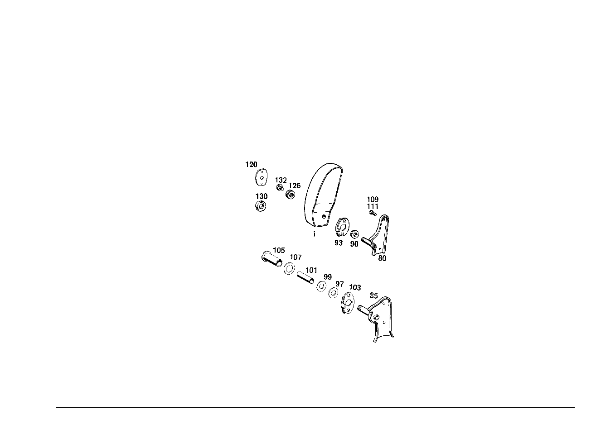

| № | Артикул | Название | Кол. | Примечание | Ограничение |
|---|---|---|---|---|---|
| 80 | A 109 970 11 20 | - ПОДШИПНИК | 1 | СЛЕВА Z 55.791/01, Z 55.791/02, Z 55.791/03, Z 55.791/04, Z 55.791/05, Z 55.791/06, Z 55.791/07, Z 55.791/08, Z 55.791/09, Z 55.791/10 [002] FROM CHASSIS: 111.021,023 086016 111.024,025 000001 [011] UP TO CHASSIS: 108.015 002652 111.021,023 088724 112.021,023 009795 | |
| 85 | A 109 970 37 20 | - ПОДШИПНИК | 1 | СЛЕВА Z 55.791/01, Z 55.791/02, Z 55.791/03, Z 55.791/04, Z 55.791/08, Z 55.791/09, Z 55.791/10 [036] FROM CHASSIS: 108.016 078845 108.018 085289 108.057,058 002052 108.067,068 000407 [037] FROM CHASSIS: 111.024,025 005186 111.026,027 004264 | |
| 90 | A 108 973 00 29 | - НАПРАВЛЯЮЩАЯ | 4 | Z 55.791/01, Z 55.791/02, Z 55.791/03, Z 55.791/04, Z 55.791/06, Z 55.791/08, Z 55.791/09, Z 55.791/10 [002] FROM CHASSIS: 111.021,023 086016 111.024,025 000001 [030] UP TO CHASSIS: 108.012,014,015 UNTIL PRODUCTION STOP 108.016 054096 108.018.019 059002 [031] UP TO CHASSIS: 109.015,016 UNTIL PRODUCTION STOP 109.018 004324 109.056 001554 111.024 004829 111.026,027 001228 | |
| 93 | A 109 973 00 26 | - УПОР | 2 | Z 55.791/01, Z 55.791/02, Z 55.791/03, Z 55.791/04, Z 55.791/06, Z 55.791/08, Z 55.791/09, Z 55.791/10 [002] FROM CHASSIS: 111.021,023 086016 111.024,025 000001 [030] UP TO CHASSIS: 108.012,014,015 UNTIL PRODUCTION STOP 108.016 054096 108.018.019 059002 [031] UP TO CHASSIS: 109.015,016 UNTIL PRODUCTION STOP 109.018 004324 109.056 001554 111.024 004829 111.026,027 001228 | |
| 97 | A 109 990 00 40 | - ШАЙБА | - | Z 55.791/01, Z 55.791/02, Z 55.791/03, Z 55.791/04, Z 55.791/08, Z 55.791/10 | |
| 97 | A 116 984 01 56 | - Диск | 2 | Z 55.791/01, Z 55.791/02, Z 55.791/03, Z 55.791/04, Z 55.791/08, Z 55.791/10 [032] FROM CHASSIS: 108.016 054097 108.018,019 059003 109.018 004325 109.056 001555 111.024,025 004830 111.026,027 001229 | |
| 99 | A 109 990 01 40 | - Диск | 4 | Z 55.791/01, Z 55.791/02, Z 55.791/03, Z 55.791/04, Z 55.791/08, Z 55.791/10 [032] FROM CHASSIS: 108.016 054097 108.018,019 059003 109.018 004325 109.056 001555 111.024,025 004830 111.026,027 001229 | |
| 101 | N 040621 018211 | - Изоляционный шланг | 2 | Z 55.791/01, Z 55.791/02, Z 55.791/03, Z 55.791/04, Z 55.791/08, Z 55.791/10 [032] FROM CHASSIS: 108.016 054097 108.018,019 059003 109.018 004325 109.056 001555 111.024,025 004830 111.026,027 001229 | |
| 101 | A 109 973 02 26 | - УПОР | - | Z 55.791/01, Z 55.791/02, Z 55.791/03, Z 55.791/04, Z 55.791/08, Z 55.791/10 | |
| 103 | A 109 973 03 26 | - УПОР | 2 | Z 55.791/01, Z 55.791/02, Z 55.791/03, Z 55.791/04, Z 55.791/08, Z 55.791/10 [032] FROM CHASSIS: 108.016 054097 108.018,019 059003 109.018 004325 109.056 001555 111.024,025 004830 111.026,027 001229 | |
| 105 | A 109 973 00 37 | - ПРОСТАВКА | - | Z 55.791/01, Z 55.791/02, Z 55.791/03, Z 55.791/04, Z 55.791/08, Z 55.791/10 | |
| 105 | A 107 973 02 37 | - Проставочная труба | 2 | Z 55.791/01, Z 55.791/02, Z 55.791/03, Z 55.791/04, Z 55.791/08, Z 55.791/10 [032] FROM CHASSIS: 108.016 054097 108.018,019 059003 109.018 004325 109.056 001555 111.024,025 004830 111.026,027 001229 | |
| 107 | A 109 987 00 41 | - Диск | 2 | Z 55.791/01, Z 55.791/02, Z 55.791/03, Z 55.791/04, Z 55.791/08, Z 55.791/10 [032] FROM CHASSIS: 108.016 054097 108.018,019 059003 109.018 004325 109.056 001555 111.024,025 004830 111.026,027 001229 | |
| 109 | A 110 990 04 31 | - БОЛТ | - | Z 55.791/01, Z 55.791/02, Z 55.791/03, Z 55.791/04, Z 55.791/06, Z 55.791/08, Z 55.791/09, Z 55.791/10 | |
| 120 | A 100 973 07 11 | - ПЛАСТИНА | - | Z 55.791/01, Z 55.791/02, Z 55.791/03, Z 55.791/04, Z 55.791/08, Z 55.791/09, Z 55.791/10 [003] ИСПОЛЬЗ.СТАР.НОМЕР ДЕТАЛИ ПРИ ШАССИ: 108.012 051153 108.014 040479 108.015 002547 111.021,023 009768 | |
| 120 | A 100 973 09 11 | - ПЛАСТИНА | - | Z 55.791/01, Z 55.791/02, Z 55.791/03, Z 55.791/04, Z 55.791/08, Z 55.791/09, Z 55.791/10 [003] ИСПОЛЬЗ.СТАР.НОМЕР ДЕТАЛИ ПРИ ШАССИ: 108.012 051153 108.014 040479 108.015 002547 111.021,023 009768 [415] ПРИМЕЧ. ПО ЗАМЕНЕ ПРИМЕНИМО ТОЛЬКО ДЛЯ СТОЯЩИХ РЯДОМ ПОЗИЦИЙ | |
| 120 | A 100 973 13 11 | - ПЛАСТИНА | - | Z 55.791/01, Z 55.791/02, Z 55.791/03, Z 55.791/04, Z 55.791/05, Z 55.791/06, Z 55.791/07, Z 55.791/08, Z 55.791/09, Z 55.791/10 | |
| 120 | A 100 973 09 11 | - ПЛАСТИНА | 2 | Z 55.791/01, Z 55.791/02, Z 55.791/03, Z 55.791/04, Z 55.791/05, Z 55.791/06, Z 55.791/07, Z 55.791/08, Z 55.791/09, Z 55.791/10 [019] UP TO CHASSIS: 111.021,023 UNTIL PRODUCTION STOP 111.024,025 002889 [018] UP TO CHASSIS: 108.012,014,015 UNTIL PRODUCTION STOP 108.016 028665 108.018,019 029688 [026] UP TO CHASSIS: 109.015 UNTIL PRODUCTION STOP 109.016 001887 109.018 002098 | |
| 126 | A 109 990 00 50 | - ГАЙКА | 2 | Z 55.791/01, Z 55.791/02, Z 55.791/03, Z 55.791/04, Z 55.791/06, Z 55.791/08, Z 55.791/09, Z 55.791/10 [002] FROM CHASSIS: 111.021,023 086016 111.024,025 000001 [015] UP TO CHASSIS: 111.021,023 088698 108.012 054682 108.014 043034 108.015 002579 | |
| 130 | A 109 990 00 60 | - ГАЙКА | - | Z 55.791/01, Z 55.791/02, Z 55.791/03, Z 55.791/04, Z 55.791/06, Z 55.791/08, Z 55.791/09, Z 55.791/10 [014] FROM CHASSIS: 108.012 054683 108.014 043035 108.015 002580 108.016,018 000001 111.021,023 088699 111.024,025 000001 [016] UP TO CHASSIS: 108.012 073181 108.016 013708 108.018,019 012339 111.024,025 001239 | |
| 130 | A 109 990 01 60 | - гайка | 2 | Z 55.791/01, Z 55.791/02, Z 55.791/03, Z 55.791/04, Z 55.791/06, Z 55.791/08, Z 55.791/09, Z 55.791/10 [017] FROM CHASSIS: 108.012 073182 108.016 013709 108.018,019 012340 111.024,025 001240 | |
| 132 | N 000933 004037 | - БОЛТ | 2 | Z 55.791/01, Z 55.791/02, Z 55.791/03, Z 55.791/04, Z 55.791/06, Z 55.791/08, Z 55.791/09, Z 55.791/10 [014] FROM CHASSIS: 108.012 054683 108.014 043035 108.015 002580 108.016,018 000001 111.021,023 088699 111.024,025 000001 [016] UP TO CHASSIS: 108.012 073181 108.016 013708 108.018,019 012339 111.024,025 001239 | |
| A 112 970 55 30 | ПОДЛОКОТНИК ОТКИДН. | - | Z 55.791/04, Z 55.791/05 | ||
| A 112 970 91 30 | ПОДЛОКОТНИК ОТКИДН. | 1 | СЛЕВА Z 55.791/04, Z 55.791/05 [406] ПРИ ЗАКАЗЕ УКАЗЫВАТЬ НОМЕР ЦВЕТА [029] WHEN PLACING ORDERS,ALSO ORDER THE RESPECTIVE RANGE OF DELIVERY OF MOUNTING MATERIALS AS APPLICABLE TO THE SAME CHASSIS NUMBER [019] UP TO CHASSIS: 111.021,023 UNTIL PRODUCTION STOP 111.024,025 002889 | ||
| A 109 970 63 30 | ПОДЛОКОТНИК ОТКИДН. | - | Z 55.791/04 | ||
| A 109 970 17 31 | ПОДЛОКОТНИК ОТКИДН. | 1 | СЛЕВА Z 55.791/04 [406] ПРИ ЗАКАЗЕ УКАЗЫВАТЬ НОМЕР ЦВЕТА [029] WHEN PLACING ORDERS,ALSO ORDER THE RESPECTIVE RANGE OF DELIVERY OF MOUNTING MATERIALS AS APPLICABLE TO THE SAME CHASSIS NUMBER [020] FROM CHASSIS: 111.024,025 002890 111.026,027 000001 | ||
| A 112 970 56 30 | ПОДЛОКОТНИК ОТКИДН. | - | Z 55.791/04, Z 55.791/05 | ||
| A 112 970 92 30 | ПОДЛОКОТНИК ОТКИДН. | 1 | СПРАВА Z 55.791/04, Z 55.791/05 [406] ПРИ ЗАКАЗЕ УКАЗЫВАТЬ НОМЕР ЦВЕТА [029] WHEN PLACING ORDERS,ALSO ORDER THE RESPECTIVE RANGE OF DELIVERY OF MOUNTING MATERIALS AS APPLICABLE TO THE SAME CHASSIS NUMBER [019] UP TO CHASSIS: 111.021,023 UNTIL PRODUCTION STOP 111.024,025 002889 | ||
| A 109 970 64 30 | ПОДЛОКОТНИК ОТКИДН. | - | Z 55.791/04 | ||
| A 109 970 18 31 | ПОДЛОКОТНИК ОТКИДН. | 1 | СПРАВА Z 55.791/04 [406] ПРИ ЗАКАЗЕ УКАЗЫВАТЬ НОМЕР ЦВЕТА [029] WHEN PLACING ORDERS,ALSO ORDER THE RESPECTIVE RANGE OF DELIVERY OF MOUNTING MATERIALS AS APPLICABLE TO THE SAME CHASSIS NUMBER [020] FROM CHASSIS: 111.024,025 002890 111.026,027 000001 | ||
| A 112 970 57 30 | ПОДЛОКОТНИК ОТКИДН. | - | Z 55.791/06, Z 55.791/07 | ||
| A 112 970 93 30 | ПОДЛОКОТНИК ОТКИДН. | 1 | СЛЕВА Z 55.791/06, Z 55.791/07 [406] ПРИ ЗАКАЗЕ УКАЗЫВАТЬ НОМЕР ЦВЕТА [029] WHEN PLACING ORDERS,ALSO ORDER THE RESPECTIVE RANGE OF DELIVERY OF MOUNTING MATERIALS AS APPLICABLE TO THE SAME CHASSIS NUMBER [402] БОЛЬШЕ НЕ ПОСТАВЛЯЕТСЯ | ||
| A 112 970 58 30 | ПОДЛОКОТНИК ОТКИДН. | - | Z 55.791/06, Z 55.791/07 | ||
| A 112 970 94 30 | ПОДЛОКОТНИК ОТКИДН. | 1 | СПРАВА Z 55.791/06, Z 55.791/07 [406] ПРИ ЗАКАЗЕ УКАЗЫВАТЬ НОМЕР ЦВЕТА [029] WHEN PLACING ORDERS,ALSO ORDER THE RESPECTIVE RANGE OF DELIVERY OF MOUNTING MATERIALS AS APPLICABLE TO THE SAME CHASSIS NUMBER [402] БОЛЬШЕ НЕ ПОСТАВЛЯЕТСЯ | ||
| A 000 987 43 72 | - ЗАЩИТА КРОМОК | NB | (ORDER BY THE METER) Z 55.791/01, Z 55.791/02, Z 55.791/03, Z 55.791/04, Z 55.791/05, Z 55.791/08, Z 55.791/09, Z 55.791/10 [007] FROM CHASSIS: 108.015 002590 108.016,018 000001 111.021,023 088725 111.024,025 000001 112.021,023 009796 [023] UP TO CHASSIS: 114.024,025 001887 108.012 074049 108.016 019540 108.018,019 019237 | ||
| A 108 970 21 30 | ПОДЛОКОТНИК ОТКИДН. | - | Z 55.791/01, Z 55.791/02, Z 55.791/03, Z 55.791/04, Z 55.791/08, Z 55.791/09, Z 55.791/10 [018] UP TO CHASSIS: 108.012,014,015 UNTIL PRODUCTION STOP 108.016 028665 108.018,019 029688 | ||
| A 108 970 13 31 | ПОДЛОКОТНИК ОТКИДН. | - | Z 55.791/01, Z 55.791/02, Z 55.791/03, Z 55.791/04, Z 55.791/08, Z 55.791/09, Z 55.791/10 [018] UP TO CHASSIS: 108.012,014,015 UNTIL PRODUCTION STOP 108.016 028665 108.018,019 029688 | ||
| A 109 970 33 30 | ПОДЛОКОТНИК ОТКИДН. | - | Z 55.791/01, Z 55.791/02, Z 55.791/03, Z 55.791/04, Z 55.791/08, Z 55.791/09, Z 55.791/10 [018] UP TO CHASSIS: 108.012,014,015 UNTIL PRODUCTION STOP 108.016 028665 108.018,019 029688 | ||
| A 109 970 03 31 | ПОДЛОКОТНИК ОТКИДН. | - | Z 55.791/01, Z 55.791/02, Z 55.791/03, Z 55.791/04, Z 55.791/08, Z 55.791/09, Z 55.791/10 [018] UP TO CHASSIS: 108.012,014,015 UNTIL PRODUCTION STOP 108.016 028665 108.018,019 029688 | ||
| A 108 970 14 31 | ПОДЛОКОТНИК ОТКИДН. | - | Z 55.791/01, Z 55.791/02, Z 55.791/03, Z 55.791/04, Z 55.791/08, Z 55.791/09, Z 55.791/10 [018] UP TO CHASSIS: 108.012,014,015 UNTIL PRODUCTION STOP 108.016 028665 108.018,019 029688 | ||
| A 109 970 34 30 | ПОДЛОКОТНИК ОТКИДН. | - | Z 55.791/01, Z 55.791/02, Z 55.791/03, Z 55.791/04, Z 55.791/08, Z 55.791/09, Z 55.791/10 [018] UP TO CHASSIS: 108.012,014,015 UNTIL PRODUCTION STOP 108.016 028665 108.018,019 029688 | ||
| A 109 970 04 31 | ПОДЛОКОТНИК ОТКИДН. | - | Z 55.791/01, Z 55.791/02, Z 55.791/03, Z 55.791/04, Z 55.791/08, Z 55.791/09, Z 55.791/10 [018] UP TO CHASSIS: 108.012,014,015 UNTIL PRODUCTION STOP 108.016 028665 108.018,019 029688 | ||
| A 111 970 67 30 | ПОДЛОКОТНИК ОТКИДН. | - | Z 55.791/04, Z 55.791/05, Z 55.791/06, Z 55.791/07 | ||
| A 112 970 69 30 | ПОДЛОКОТНИК ОТКИДН. | - | Z 55.791/04, Z 55.791/05, Z 55.791/06, Z 55.791/07 | ||
| A 111 970 68 30 | ПОДЛОКОТНИК ОТКИДН. | - | Z 55.791/04, Z 55.791/05, Z 55.791/06, Z 55.791/07 | ||
| A 112 970 70 30 | ПОДЛОКОТНИК ОТКИДН. | - | Z 55.791/04, Z 55.791/05, Z 55.791/06, Z 55.791/07 | ||
| A 108 970 57 31 | ПОДЛОКОТНИК ОТКИДН. | 1 | LEFT COMPLETE, BUT LESS COVER Z 55.791/01, Z 55.791/02, Z 55.791/03, Z 55.791/04, Z 55.791/05, Z 55.791/06, Z 55.791/07, Z 55.791/08, Z 55.791/09, Z 55.791/10 [029] WHEN PLACING ORDERS,ALSO ORDER THE RESPECTIVE RANGE OF DELIVERY OF MOUNTING MATERIALS AS APPLICABLE TO THE SAME CHASSIS NUMBER | ||
| A 108 970 58 31 | ПОДЛОКОТНИК ОТКИДН. | 1 | RIGHT;COMPLETE,BUT LESS COVER Z 55.791/01, Z 55.791/02, Z 55.791/03, Z 55.791/04, Z 55.791/05, Z 55.791/06, Z 55.791/07, Z 55.791/08, Z 55.791/09, Z 55.791/10 [029] WHEN PLACING ORDERS,ALSO ORDER THE RESPECTIVE RANGE OF DELIVERY OF MOUNTING MATERIALS AS APPLICABLE TO THE SAME CHASSIS NUMBER | ||
| A 108 970 19 30 | ПОДЛОКОТНИК ОТКИДН. | - | Z 55.791/01, Z 55.791/02, Z 55.791/03, Z 55.791/04, Z 55.791/05, Z 55.791/06, Z 55.791/07, Z 55.791/08, Z 55.791/09, Z 55.791/10 | ||
| A 108 970 05 30 | ПОДЛОКОТНИК ОТКИДН. | - | Z 55.791/01, Z 55.791/02, Z 55.791/03, Z 55.791/04, Z 55.791/05, Z 55.791/06, Z 55.791/07, Z 55.791/08, Z 55.791/09, Z 55.791/10 | ||
| A 108 970 20 30 | ПОДЛОКОТНИК ОТКИДН. | - | Z 55.791/01, Z 55.791/02, Z 55.791/03, Z 55.791/04, Z 55.791/05, Z 55.791/06, Z 55.791/07, Z 55.791/08, Z 55.791/09, Z 55.791/10 | ||
| A 108 970 06 30 | ПОДЛОКОТНИК ОТКИДН. | - | Z 55.791/01, Z 55.791/02, Z 55.791/03, Z 55.791/04, Z 55.791/05, Z 55.791/06, Z 55.791/07, Z 55.791/08, Z 55.791/09, Z 55.791/10 | ||
| A 108 970 05 31 | КРЕП. МАТЕРИАЛ | 1 | RANGE OF DELIVERY OF ARM REST,LEFT Z 55.791/01, Z 55.791/02, Z 55.791/03, Z 55.791/04, Z 55.791/05, Z 55.791/06, Z 55.791/07, Z 55.791/08, Z 55.791/09, Z 55.791/10 [002] FROM CHASSIS: 111.021,023 086016 111.024,025 000001 [011] UP TO CHASSIS: 108.015 002652 111.021,023 088724 112.021,023 009795 [040] NOT FOR USE WITH ARM REST WITH PLASTIC SUPPORTING SHELL | ||
| A 108 970 06 31 | КРЕП. МАТЕРИАЛ | 1 | RANGE OF DELIVERY OF ARM REST,RIGHT Z 55.791/01, Z 55.791/02, Z 55.791/03, Z 55.791/04, Z 55.791/05, Z 55.791/06, Z 55.791/07, Z 55.791/08, Z 55.791/09, Z 55.791/10 [402] БОЛЬШЕ НЕ ПОСТАВЛЯЕТСЯ [002] FROM CHASSIS: 111.021,023 086016 111.024,025 000001 [011] UP TO CHASSIS: 108.015 002652 111.021,023 088724 112.021,023 009795 [040] NOT FOR USE WITH ARM REST WITH PLASTIC SUPPORTING SHELL | ||
| A 108 970 55 31 | КРЕП. МАТЕРИАЛ | 1 | RANGE OF DELIVERY OF ARM REST,LEFT Z 55.791/01, Z 55.791/02, Z 55.791/03, Z 55.791/04, Z 55.791/05, Z 55.791/06, Z 55.791/07, Z 55.791/08, Z 55.791/09, Z 55.791/10 [002] FROM CHASSIS: 111.021,023 086016 111.024,025 000001 [011] UP TO CHASSIS: 108.015 002652 111.021,023 088724 112.021,023 009795 [041] ONLY FOR USE WITH ARM REST WITH PLASTIC SUPPORTING SHELL | ||
| A 108 970 56 31 | КРЕП. МАТЕРИАЛ | 1 | RANGE OF DELIVERY OF ARM REST,RIGHT Z 55.791/01, Z 55.791/02, Z 55.791/03, Z 55.791/04, Z 55.791/05, Z 55.791/06, Z 55.791/07, Z 55.791/08, Z 55.791/09, Z 55.791/10 [002] FROM CHASSIS: 111.021,023 086016 111.024,025 000001 [011] UP TO CHASSIS: 108.015 002652 111.021,023 088724 112.021,023 009795 [041] ONLY FOR USE WITH ARM REST WITH PLASTIC SUPPORTING SHELL | ||
| A 108 970 49 30 | ПОДЛОКОТНИК ОТКИДН. | - | Z 55.791/01, Z 55.791/02, Z 55.791/03, Z 55.791/04, Z 55.791/05, Z 55.791/08, Z 55.791/09, Z 55.791/10 [019] UP TO CHASSIS: 111.021,023 UNTIL PRODUCTION STOP 111.024,025 002889 [018] UP TO CHASSIS: 108.012,014,015 UNTIL PRODUCTION STOP 108.016 028665 108.018,019 029688 [013] FROM CHASSIS: 108.015 002653 108.016,018 000001 111.021,023 088725 111.024,025 000001 112.021,023 009796 [026] UP TO CHASSIS: 109.015 UNTIL PRODUCTION STOP 109.016 001887 109.018 002098 | ||
| A 108 970 48 30 | ПОДЛОКОТНИК ОТКИДН. | - | Z 55.791/01, Z 55.791/02, Z 55.791/03, Z 55.791/04, Z 55.791/05, Z 55.791/08, Z 55.791/09, Z 55.791/10 [019] UP TO CHASSIS: 111.021,023 UNTIL PRODUCTION STOP 111.024,025 002889 [018] UP TO CHASSIS: 108.012,014,015 UNTIL PRODUCTION STOP 108.016 028665 108.018,019 029688 [013] FROM CHASSIS: 108.015 002653 108.016,018 000001 111.021,023 088725 111.024,025 000001 112.021,023 009796 [026] UP TO CHASSIS: 109.015 UNTIL PRODUCTION STOP 109.016 001887 109.018 002098 | ||
| A 108 970 07 31 | КРЕП. МАТЕРИАЛ | - | Z 55.791/01, Z 55.791/02, Z 55.791/03, Z 55.791/04, Z 55.791/05, Z 55.791/08, Z 55.791/09, Z 55.791/10 | ||
| A 108 970 61 31 | КРЕП. МАТЕРИАЛ | 1 | RANGE OF DELIVERY OF ARM REST,LEFT Z 55.791/01, Z 55.791/02, Z 55.791/03, Z 55.791/04, Z 55.791/05, Z 55.791/08, Z 55.791/09, Z 55.791/10 [028] FROM CHASSIS: 108.016 028666 108.018,019 029689 109.016 001888 109.018 002099 111.024,025 002890 111.026,027 000001 [030] UP TO CHASSIS: 108.012,014,015 UNTIL PRODUCTION STOP 108.016 054096 108.018.019 059002 [031] UP TO CHASSIS: 109.015,016 UNTIL PRODUCTION STOP 109.018 004324 109.056 001554 111.024 004829 111.026,027 001228 | ||
| A 108 970 08 31 | КРЕП. МАТЕРИАЛ | - | Z 55.791/01, Z 55.791/02, Z 55.791/03, Z 55.791/04, Z 55.791/05, Z 55.791/08, Z 55.791/09, Z 55.791/10 | ||
| A 108 970 62 31 | КРЕП. МАТЕРИАЛ | 1 | RANGE OF DELIVERY OF ARM REST,RIGHT Z 55.791/01, Z 55.791/02, Z 55.791/03, Z 55.791/04, Z 55.791/05, Z 55.791/08, Z 55.791/09, Z 55.791/10 [028] FROM CHASSIS: 108.016 028666 108.018,019 029689 109.016 001888 109.018 002099 111.024,025 002890 111.026,027 000001 [030] UP TO CHASSIS: 108.012,014,015 UNTIL PRODUCTION STOP 108.016 054096 108.018.019 059002 [031] UP TO CHASSIS: 109.015,016 UNTIL PRODUCTION STOP 109.018 004324 109.056 001554 111.024 004829 111.026,027 001228 | ||
| A 108 970 53 31 | КРЕП. МАТЕРИАЛ | - | Z 55.791/01, Z 55.791/02, Z 55.791/03, Z 55.791/04, Z 55.791/05, Z 55.791/08, Z 55.791/09, Z 55.791/10 | ||
| A 108 970 63 31 | КРЕП. МАТЕРИАЛ | 1 | RANGE OF DELIVERY OF ARM REST,LEFT Z 55.791/01, Z 55.791/02, Z 55.791/03, Z 55.791/04, Z 55.791/05, Z 55.791/08, Z 55.791/09, Z 55.791/10 [032] FROM CHASSIS: 108.016 054097 108.018,019 059003 109.018 004325 109.056 001555 111.024,025 004830 111.026,027 001229 | ||
| A 108 970 54 31 | КРЕП. МАТЕРИАЛ | - | Z 55.791/01, Z 55.791/02, Z 55.791/03, Z 55.791/04, Z 55.791/05, Z 55.791/08, Z 55.791/09, Z 55.791/10 | ||
| A 108 970 64 31 | КРЕП. МАТЕРИАЛ | 1 | RANGE OF DELIVERY OF ARM REST,RIGHT Z 55.791/01, Z 55.791/02, Z 55.791/03, Z 55.791/04, Z 55.791/05, Z 55.791/08, Z 55.791/09, Z 55.791/10 [032] FROM CHASSIS: 108.016 054097 108.018,019 059003 109.018 004325 109.056 001555 111.024,025 004830 111.026,027 001229 | ||
| A 109 970 01 20 | - ПОДШИПНИК | - | Z 55.791/01, Z 55.791/02, Z 55.791/03, Z 55.791/04, Z 55.791/06, Z 55.791/08, Z 55.791/09, Z 55.791/10 [015] UP TO CHASSIS: 111.021,023 088698 108.012 054682 108.014 043034 108.015 002579 | ||
| A 109 970 02 20 | - ПОДШИПНИК | - | Z 55.791/01, Z 55.791/02, Z 55.791/03, Z 55.791/04, Z 55.791/06, Z 55.791/08, Z 55.791/09, Z 55.791/10 [015] UP TO CHASSIS: 111.021,023 088698 108.012 054682 108.014 043034 108.015 002579 | ||
| A 109 970 12 20 | - ПОДШИПНИК | 1 | СПРАВА Z 55.791/01, Z 55.791/02, Z 55.791/03, Z 55.791/04, Z 55.791/05, Z 55.791/06, Z 55.791/07, Z 55.791/08, Z 55.791/09, Z 55.791/10 [002] FROM CHASSIS: 111.021,023 086016 111.024,025 000001 [011] UP TO CHASSIS: 108.015 002652 111.021,023 088724 112.021,023 009795 | ||
| A 109 970 13 20 | - ПОДШИПНИК | - | Z 55.791/01, Z 55.791/02, Z 55.791/03, Z 55.791/04, Z 55.791/08, Z 55.791/09, Z 55.791/10 [013] FROM CHASSIS: 108.015 002653 108.016,018 000001 111.021,023 088725 111.024,025 000001 112.021,023 009796 [034] UP TO CHASSIS: 108.016 078844 108.018 085288 108.019 UNTIL PRODUCTION STOP 108.057,058 002051 108.067,068 000406 [035] UP TO CHASSIS: 111.021,023 UNTIL PRODUCTION STOP 111.024,025 005185 111.026,027 004263 | ||
| A 109 970 14 20 | - ПОДШИПНИК | - | Z 55.791/01, Z 55.791/02, Z 55.791/03, Z 55.791/04, Z 55.791/08, Z 55.791/09, Z 55.791/10 [013] FROM CHASSIS: 108.015 002653 108.016,018 000001 111.021,023 088725 111.024,025 000001 112.021,023 009796 [034] UP TO CHASSIS: 108.016 078844 108.018 085288 108.019 UNTIL PRODUCTION STOP 108.057,058 002051 108.067,068 000406 [035] UP TO CHASSIS: 111.021,023 UNTIL PRODUCTION STOP 111.024,025 005185 111.026,027 004263 | ||
| A 109 970 38 20 | - ПОДШИПНИК | 1 | СПРАВА Z 55.791/01, Z 55.791/02, Z 55.791/03, Z 55.791/04, Z 55.791/08, Z 55.791/09, Z 55.791/10 [036] FROM CHASSIS: 108.016 078845 108.018 085289 108.057,058 002052 108.067,068 000407 [037] FROM CHASSIS: 111.024,025 005186 111.026,027 004264 | ||
| N 000966 006021 | - Винт | 4 | Z 55.791/01, Z 55.791/02, Z 55.791/03, Z 55.791/04, Z 55.791/05, Z 55.791/06, Z 55.791/07, Z 55.791/08, Z 55.791/09, Z 55.791/10 [002] FROM CHASSIS: 111.021,023 086016 111.024,025 000001 [030] UP TO CHASSIS: 108.012,014,015 UNTIL PRODUCTION STOP 108.016 054096 108.018.019 059002 [031] UP TO CHASSIS: 109.015,016 UNTIL PRODUCTION STOP 109.018 004324 109.056 001554 111.024 004829 111.026,027 001228 | ||
| N 000966 006042 | - Винт | 4 | Z 55.791/01, Z 55.791/02, Z 55.791/03, Z 55.791/04, Z 55.791/06, Z 55.791/08, Z 55.791/09, Z 55.791/10 [002] FROM CHASSIS: 111.021,023 086016 111.024,025 000001 [011] UP TO CHASSIS: 108.015 002652 111.021,023 088724 112.021,023 009795 | ||
| A 115 990 00 31 | - БОЛТ | - | Z 55.791/01, Z 55.791/02, Z 55.791/03, Z 55.791/04, Z 55.791/08, Z 55.791/09, Z 55.791/10 | ||
| N 000988 006044 | - ШАЙБА РЕГУЛИРОВОЧНАЯ | 4 | Z 55.791/01, Z 55.791/02, Z 55.791/03, Z 55.791/04, Z 55.791/08, Z 55.791/09, Z 55.791/10 [013] FROM CHASSIS: 108.015 002653 108.016,018 000001 111.021,023 088725 111.024,025 000001 112.021,023 009796 [038] UP TO CHASSIS: 108.016 078844 108.018 085288 108.057,058 002051 108.067,068 000406 111.024,025 005185 111.026,027 004263 [039] НАЧИНАЯ С ШАССИ СМ. СТАНДАРТ.ИСПОЛНЕНИЕ | ||
| A 109 990 00 12 | - БОЛТ | 2 | Z 55.791/01, Z 55.791/02, Z 55.791/03, Z 55.791/04, Z 55.791/06, Z 55.791/08, Z 55.791/09, Z 55.791/10 [015] UP TO CHASSIS: 111.021,023 088698 108.012 054682 108.014 043034 108.015 002579 | ||
| A 109 973 06 11 | - ПЛАСТИНА | 2 | Z 55.791/01, Z 55.791/02, Z 55.791/03, Z 55.791/04, Z 55.791/05, Z 55.791/06, Z 55.791/07, Z 55.791/08, Z 55.791/09, Z 55.791/10 [028] FROM CHASSIS: 108.016 028666 108.018,019 029689 109.016 001888 109.018 002099 111.024,025 002890 111.026,027 000001 | ||
| N 000966 004003 | - Винт | 4 | Z 55.791/01, Z 55.791/02, Z 55.791/03, Z 55.791/04, Z 55.791/06, Z 55.791/08, Z 55.791/09, Z 55.791/10 [019] UP TO CHASSIS: 111.021,023 UNTIL PRODUCTION STOP 111.024,025 002889 [018] UP TO CHASSIS: 108.012,014,015 UNTIL PRODUCTION STOP 108.016 028665 108.018,019 029688 [002] FROM CHASSIS: 111.021,023 086016 111.024,025 000001 [026] UP TO CHASSIS: 109.015 UNTIL PRODUCTION STOP 109.016 001887 109.018 002098 | ||
| A 109 990 00 01 | - БОЛТ | - | Z 55.791/01, Z 55.791/02, Z 55.791/03, Z 55.791/04, Z 55.791/06, Z 55.791/08, Z 55.791/09, Z 55.791/10 | ||
| N 000933 005036 | - Винт | 2 | Z 55.791/01, Z 55.791/02, Z 55.791/03, Z 55.791/04, Z 55.791/06, Z 55.791/08, Z 55.791/09, Z 55.791/10 [017] FROM CHASSIS: 108.012 073182 108.016 013709 108.018,019 012340 111.024,025 001240 |
Позиций: 81 · подписано на схемах: 22 · колесо — плавный зум в курсор, перетаскивание — пан, двойной клик — зум, клик по артикулу — скопировать · наведите на строку или цифру на схеме — подсветка связки, клик — закрепить.